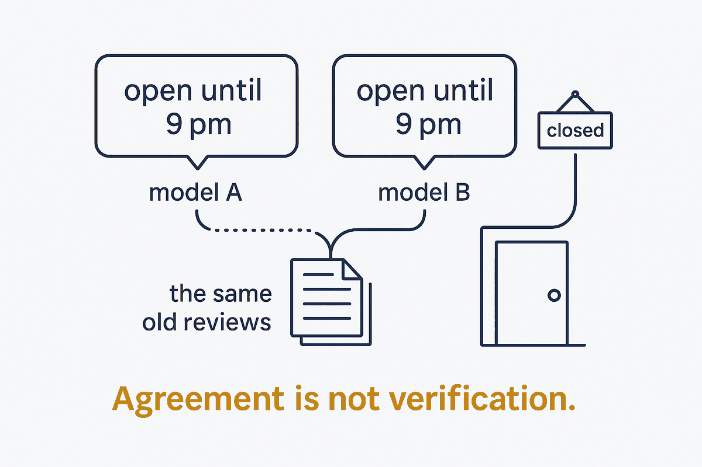

Two AI models agreeing is one witness, not two. They learned from much of the same data and fail in the same places — when both are wrong, they pick the same wrong answer most of the time.

When two AI models give the same answer, it feels like confirmation. It is closer to one witness repeating itself. Two witnesses only count as two when they saw the event independently. Large language models did not: they were trained on much of the same text, with similar methods, and they share its gaps and its stale facts.
The research is blunt. A 2025 study of more than 350 models found that when two models both get a question wrong, they choose the same wrong answer about 60% of the time — and the more accurate the models, the more their errors line up. A restaurant that closed last year is still open in both models' memory, because both read the same old reviews.
That does not make a second model useless. A second model from another provider catches errors the first one missed, because its blind spots differ — one 2026 experiment found a cross-model reviewer raised error detection from about 43% to 57%. The value is in where they disagree and in what only one of them found, not in where they agree.
So treat agreement as "not yet contradicted", never as "verified". Verification means checking against a source that saw the event: the park's alert feed, the operator's website, the business status in a maps database. See Consensus Is Not a Source.